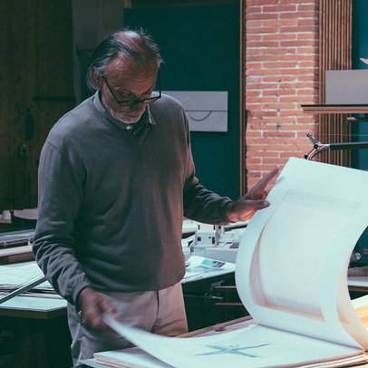
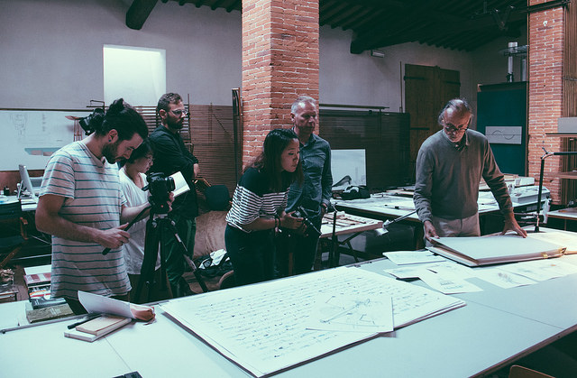
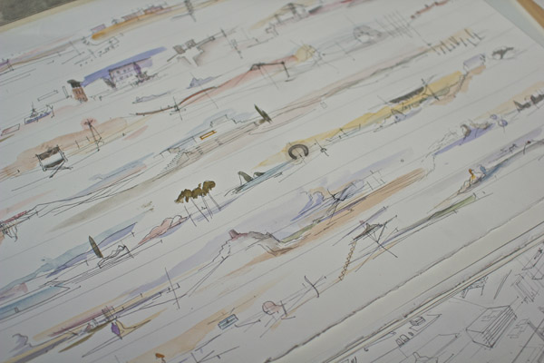
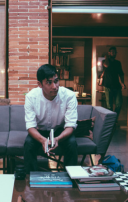
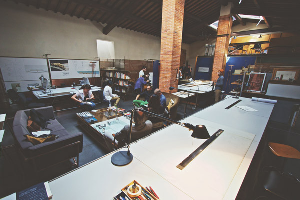

- Event Listeners
- 
Andrea Ponsi
Andrea Ponsi is an architect, designer and painter residing in Florence. His architecture is based around finding harmony with the surrounding landscape. He also designs his own products and furniture. He has authored several books on drawing exercises and methods directed to designers and architects. In these books, his sketches are used as a teaching tool to demontrate how the brainstorming process is parallel to the drawing process. His next publication is a series of perceptual sketches done in San Francisco, capturing the sensations of the city’s skylines and distinctive neighbourhoods.
"I think all architecture a process of abstractions of previous architecture."
- 
- 
- 
- 


This interview was conducted by Roxanne Henschke and Taylor Ward
Drawing
Learning to Draw
Spartito
Piazza Santa Croce
Writing
0:00
/
0:00